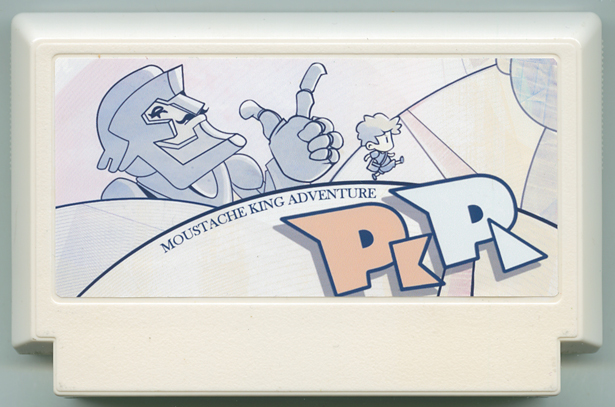

MOUSTACHE KING ADVENTURE PKPL
ランズイシ・ニコ／映像監督
『MOUSTACHE KING』という巨大なロボットと一緒に宇宙を発見するパズル ゲーム。MOUSTACHE KINGの腹はいつも減っている、金と宝石しか食べない。あなたは出来るだけ早めにいろいろな惑星の宝を探さないといけない。間に合わない時 MOUSTACHE KING が怒って、惑星とあなたを食べちゃう。宇宙の伝説の金食事を探しましょう、ギャラクシへ出発！